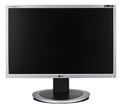

El monitor o pantalla es un dispositivo de salida que nos permite visualizar mediante una interfaz tanto la información introducida por el usuario como la devuelta tras ser procesada por el ordenador.

Historia
Las primeras computadoras se comunicaban con el operador mediante unas pequeñas luces, que se encendían o se apagaban al acceder a determinadas posiciones de memoria o ejecutar ciertas instrucciones. Años más tarde aparecieron ordenadores que funcionaban con Tarjeta perforada, que permitían introducir programas en el computador. Durante los años 60, la forma más común de interactuar con un computador era mediante un Teletipo, que se conectaba directamente a este e imprimía todos los datos de una sesión informática. Fue la forma más barata de visualizar los resultados hasta la década de los 70, cuando empezaron a aparecer los primeros monitores de CRT (Tubo de rayos catódicos). Seguían el estándar MDA (Monochrome Display Adapter), y eran monitores monocromáticos (de un solo color) de IBM. Tres años más tarde surgió el monitor EGA (Enhanced Graphics Adapter - adaptador de gráficos mejorados) estándar desarrollado por IBM para la visualización de gráficos, este monitor aportaba más colores (16) y una mayor resolución. En 1987 surgió el estándar VGA (Video Graphics Array - Matriz gráfica de video) fue un estándar muy acogido y dos años más tarde se mejoró y rediseñó para solucionar ciertos problemas que surgieron, desarrollando así SVGA (Super VGA), que también aumentaba colores y resoluciones, para este nuevo estándar se desarrollaron tarjetas gráficas de fabricantes hasta el día de hoy conocidos como S3 Graphics, NVIDIA o ATI entre otros.
Parametros de una pantalla
- Píxel: unidad mínima representable en un monitor. Los monitores pueden presentar píxeles muertos o atascados. Se notan porque aparecen en blanco. Más común en portátiles.
- Tamaño de punto o (dot pitch): el tamaño de punto es el espacio entre dos fósforos coloreados de un píxel. Es un parámetro que mide la nitidez de la imagen, midiendo la distancia entre dos puntos del mismo color; resulta fundamental a grandes resoluciones. Los tamaños de punto más pequeños producen imágenes más uniformes. un monitor de 14 pulgadas suele tener un tamaño de punto de 0,28 mm o menos. En ocasiones es diferente en vertical que en horizontal, o se trata de un valor medio, dependiendo de la disposición particular de los puntos de color en la pantalla, así como del tipo de rejilla empleada para dirigir los haces de electrones. En LCD y en CRT de apertura de rejilla, es la distancia en horizontal, mientras que en los CRT de máscara de sombra, se mide casi en diagonal. Lo mínimo exigible en este momento es que sea de 0,28mm. Para CAD o en general para diseño, lo ideal sería de 0,25mm o menor. 0,21 en máscara de sombra es el equivalente a 0.24 en apertura de rejilla.
- Área útil: el tamaño de la pantalla no coincide con el área real que se utiliza para representar los datos.
- Ángulo de visión: es el máximo ángulo con el que puede verse el monitor sin que se degrade demasiado la imagen. Se mide en grados.
- Luminancia: es la medida de luminosidad, medida en Candela.
- Tiempo de respuesta: también conocido como latencia. Es el tiempo que le cuesta a un píxel pasar de activo (blanco) a inactivo (negro) y después a activo de nuevo.
- Contraste: es la proporción de brillo entre un píxel negro a un píxel blanco que el monitor es capaz de reproducir. Algo así como cuantos tonos de brillo tiene el monitor.
- Coeficiente de contraste de imagen: se refiere a lo vivo que resultan los colores por la proporción de brillo empleada.
- A mayor coeficiente, mayor es la intensidad de los colores (30000:1 mostraría un colorido menos vivo que 50000:1).
- Consumo: cantidad de energía consumida por el monitor, se mide en Vatio.
- Ancho de banda: frecuencia máxima que es capaz de soportar el monitor.
- Hz o frecuencia de refresco vertical: son 2 valores entre los cuales el monitor es capaz de mostrar imágenes estables en la pantalla.
- Hz o frecuencia de refresco horizontal : similar al anterior pero en sentido horizontal, para dibujar cada una de las líneas de la pantalla.
- Blindaje: un monitor puede o no estar blindando ante interferencias eléctricas externas y ser más o menos sensible a ellas, por lo que en caso de estar blindando, o semi-blindado por la parte trasera llevara cubriendo prácticamente la totalidad del tubo una plancha metálica en contacto con tierra o masa.
- Tipo de monitor: en los CRT pueden existir 2 tipos, de apertura de rejilla o de máscara de sombra.
- Líneas de tensión: son unas líneas horizontales, que tienen los monitores de apertura de rejilla para mantener las líneas que permiten mostrar los colores perfectamente alineadas; en 19 pulgadas lo habitual suelen ser 2, aunque también los hay con 3 líneas, algunos monitores pequeños incluso tienen una sola.
Regresar a menu